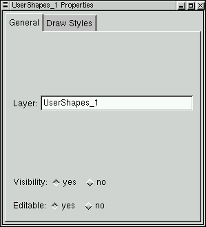
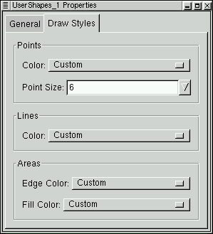

Vector Properties
The Vector Properties dialog is used to display and edit properties of a
vector layer. It can be launched by right clicking on the desired
vector layer in the Layer Manipulation Dialog.
General

- Layer: view, and modify the layer name. This name is also
displayed in the Layer Manipulation dialog.
- Visibility: Make this layer visible, or invisible. The same
thing can be accomplished with the eye icon on the Layer Manipulation
dialog.
- Editable: Toggle whether this layer can be edited or not using
the various vector editing tools.
Drawing Style

- Points: Set the color, and pixel cross hair size for point
shapes in this layer (if any). The point size is measured in screen pixels.
- Lines: Set the line color for line shapes.
- Areas: Set the edge, and fill colors for areas.